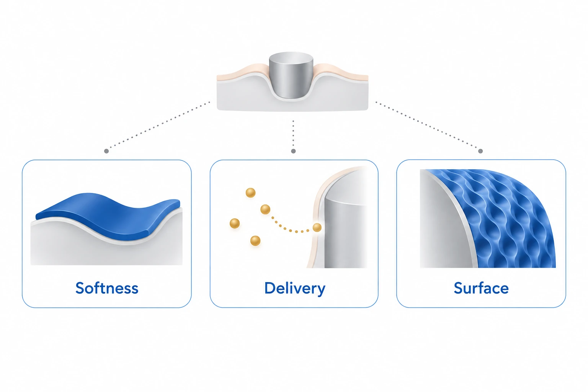

이 연구가 다루는 문제
이식형 센서와 의료기기 주변의 염증·이물 반응을 줄이기 위한 재료 전략을 정리한 종설입니다. 부드러운 구조, 국소 약물 전달, 생체모사 표면이 세포 부착과 섬유성 피막 형성에 어떻게 대응하는지 살핍니다.
이식물 표면에서 시작되는 반응
단백질·면역세포의 부착과 주변 피막은 센서의 감도와 작동 수명을 떨어뜨릴 수 있습니다. 이 리뷰는 한 이식물에서 확인한 재료 안전성이 다른 이식 환경에서도 유지된다고 가정하지 않습니다.
삽입 강성과 장기 유연성의 조절
유연한 탐침도 조직에 넣을 때는 강성이 필요합니다. 분해성 보강재는 삽입 중 일시적으로 지지한 뒤 유연성을 회복하도록 설계하지만 이물 반응은 남을 수 있습니다.

AI 개념도입니다. 리뷰 초록의 연성 재료, 약물 전달과 생체모사 표면이라는 세 가지 이물 반응 완화 전략을 보여 줍니다.
점·경계·무늬는 분류를 나타내는 기호입니다. 특정 약물, 방출구, 생물학적 구조, 구체적 기전, 통합 장치나 효능·임상 결과를 재현하지 않습니다.
논문 원그림을 복제한 이미지가 아니며, 원그림 재사용 허가를 의미하지 않습니다.
조직 반응과 장치 수명의 구분
리뷰에 소개된 열 반응성 DNNC–PEG-DA 비교는 이식 7일과 30일의 대식세포와 피막을 평가합니다. 조직 반응을 보는 지표로, 장치가 얼마나 오래 작동하는지와는 별도로 해석해야 합니다.
세포실험과 생체 내 결과의 차이
mTOR siRNA 사례는 시험관 내에서 섬유아세포 증식과 COL1A1이 줄어도 생체 내 피막 두께에는 유의한 변화가 없었다고 보고합니다. 이 해설은 리뷰의 설명을 요약하며 원자료를 재분석하지 않습니다.
장기 보호 효과의 남은 과제
혈액 접촉 TLP와 고온 수술기구 LIS 시험을 장기 이식의 보호 효과로 확대할 수는 없습니다. 표면 기능의 지속성과 생체 내 검증이 남은 과제입니다.
함께 읽을 연구
Foreign body reaction to biomaterials
DOI: 10.1016/j.smim.2007.11.004 ↗
관련 리뷰의 초록은 대식세포 융합과 표면 특성으로 이물 반응의 기전을 설명합니다.
기전을 이해하는 배경이며 개입 전략의 효과 크기를 직접 비교하는 근거는 아닙니다.
초록을 참고한 소개해설에 사용한 자료
이 해설은 논문 본문과 원그림을 참고합니다. 보충자료 전체와 원자료의 별도 검토는 완료하지 않았습니다. 인용된 개별 연구의 전문을 모두 읽은 것은 아닙니다.